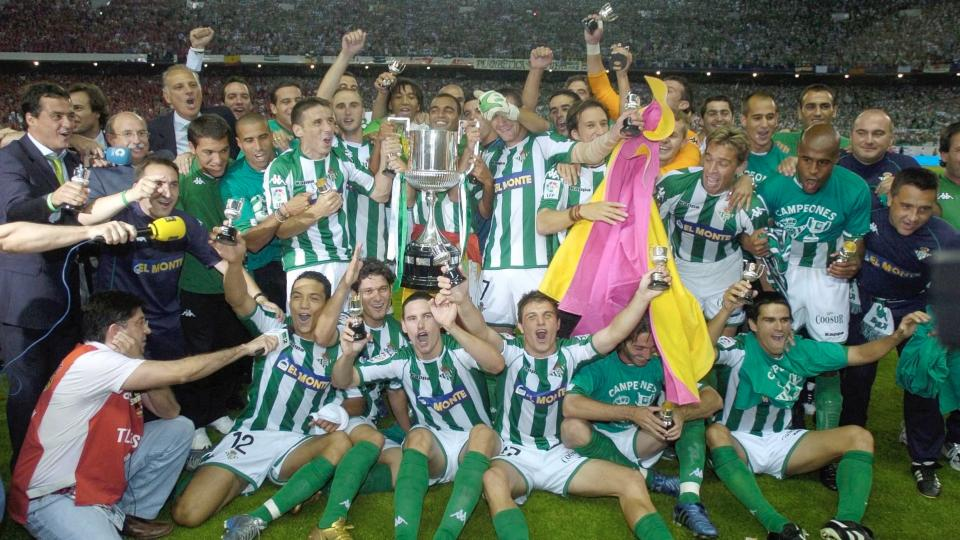
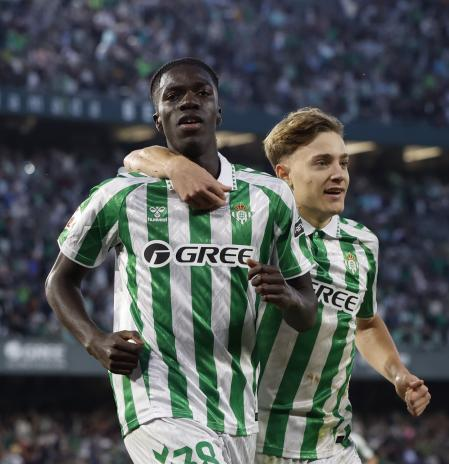
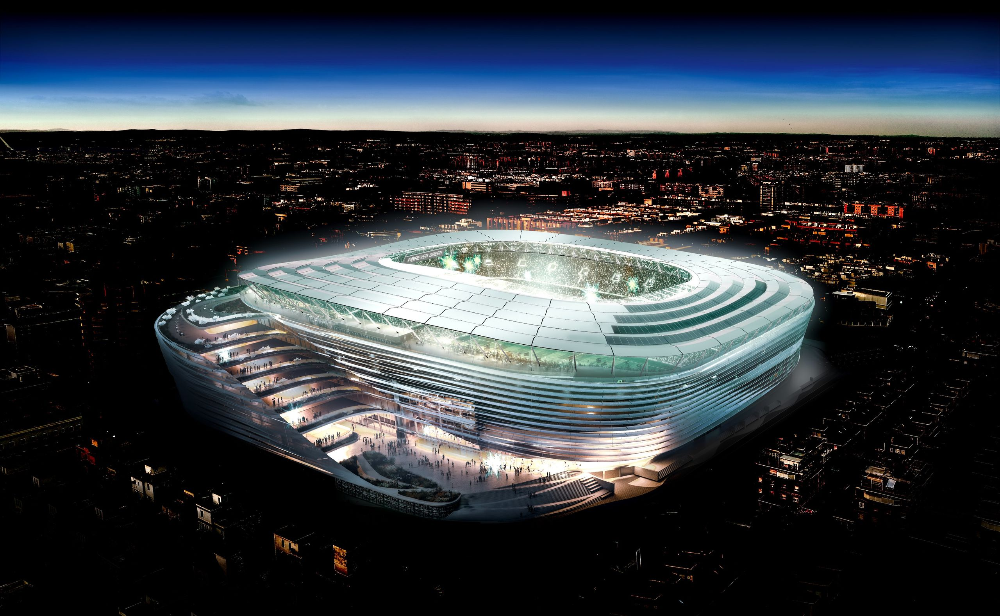

La Historia del Real Betis

El Real Betis Balompié, fundado en 1907, es uno de los clubes con más historia en el fútbol español.
Con sede en Sevilla, su estadio, el Benito Villamarín, es conocido por albergar una de las aficiones más apasionadas del mundo.
Entre sus logros destacan varias Copas del Rey y su inolvidable ascenso a la Primera División, consolidándose como
uno de los clubes icónicos de La Liga.
El Presente: Temporada 2024/2025

Bajo la dirección de su entrenador, el equipo ha mostrado un estilo de juego que combina talento, pasión y estrategia.
En la presente temporada, el Betis lucha por los puestos europeos y sigue soñando con nuevos trofeos.
Los fichajes recientes, como Isco y otros jugadores clave, han reforzado al equipo, manteniendo viva la esperanza
de la afición verdiblanca.
El Futuro del Real Betis

El Real Betis apuesta por una cantera sólida y una visión de largo plazo. Las inversiones en la infraestructura del club
y su compromiso con el fútbol base aseguran un futuro prometedor.
La afición espera con entusiasmo el crecimiento del club y los éxitos que están por venir. ¡Mucho Betis!